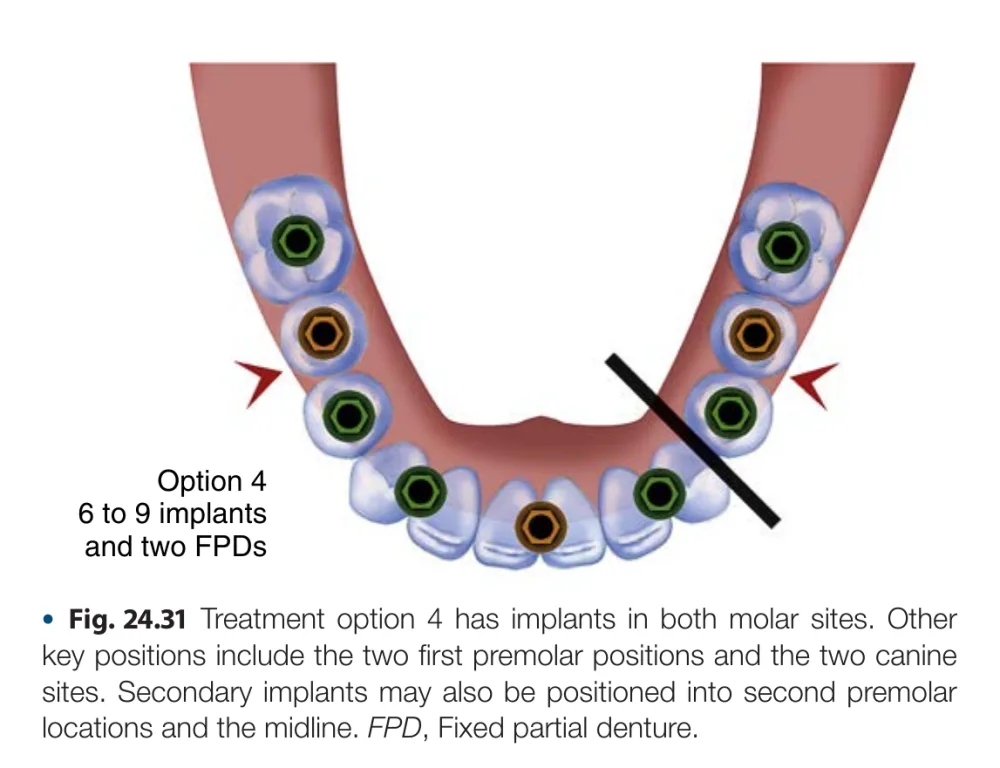
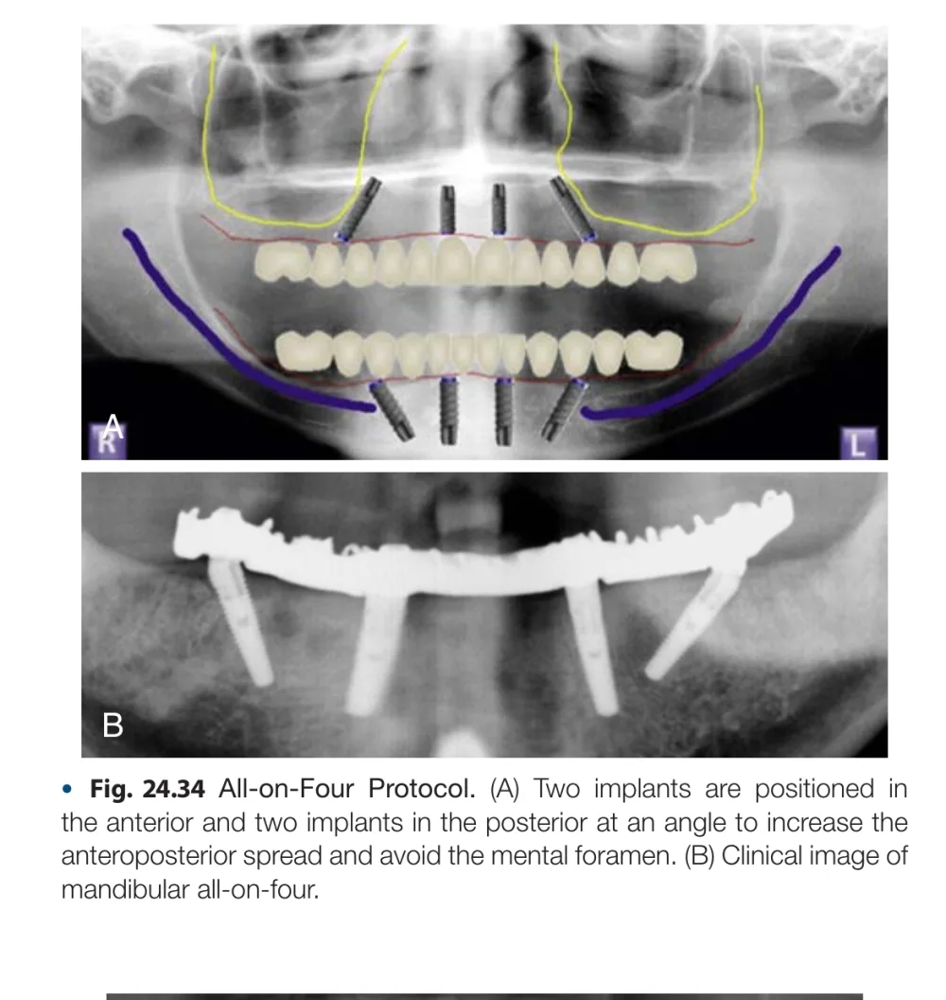

نسخه استخراجشده؛ ترجمه یا تأیید علمی انجام نشده است. وضعیت: captured
گزینهی ۴ — ایمپلنتهای قدامی بهعلاوهی ایمپلنتهای خلفی دوطرفه.
چه زمانی انتخاب میشود؟ «وقتی عوامل نیرو زیادند یا تراکم استخوان ضعیف است.» و یک نکتهی دیگر: کیفیت ضعیف استخوان بیشتر در ماگزیلای خلفی دیده میشود، ولی گاهی در مندیبل هم یافت میشود.
و شرط مطلق این گزینه: «ایمپلنتهای خلفی دوطرفه میتوانند در طرح باشند تا زمانی که در یک پروتز واحد به هم اسپلینت نشوند. پروتز باید بیش از یک تکه باشد.» — این همان محدودیت خمش و تورشن مندیبل است؛ گزینههای ۱ و ۲ با ماندن در قدام و روی فورامنها، و گزینهی ۳ با اسپلینت فقط یک سمت خلفی، از آن دور میماندند.
موقعیتهای کلیدی: دو مولر اول، دو پرمولر اول، دو کانین. موقعیتهای ثانویه: پرمولر دوم و/یا انسیزور (میدلاین).
و طراحی پروتزی دوتکه:
همهی ایمپلنتهای قدامی و یک سمت خلفی به هم اسپلینت میشوند. سمت خلفی دیگر بهطور مستقل با یک پروتز ثابت سهواحدی روی ایمپلنتهای پرمولر اول و مولر اول ترمیم میشود.
چرا سه ایمپلنت برای سگمنت کوچکتر؟ دو دلیل دارد: جبران عوامل نیرو، و همراستایی ایمپلنتها — «چون آنها تقریباً در یک خط راستاند». (سه ایمپلنت: پرمولر اول، پرمولر دوم، مولر.)
و شمار کل: دستکم شش ایمپلنت معمولاً به کار میرود، اما هفت بیشتر استفاده میشود تا سگمنت کوچکتر سه ایمپلنت داشته باشد.
مزایای گزینهی ۴:
و یک الزام اکلوزالی: «پروتز باید در حرکات اکسکورسیو دیساکلوژن خلفی نشان دهد تا بارهای جانبی محدود شوند — بهویژه برای پروتزی که ایمپلنتهای کمتری آن را پشتیبانی میکنند.» یعنی سگمنت کوچکتر باید بیشتر محافظت شود.
و یک تغییر سهتکه:
بهجای دو پروتز مستقل میتوان سه پروتز مستقل ساخت: ناحیهی قدامی با چهار تا پنج ایمپلنت، ترمیمهای خلفی از مولر اول تا پرمولر اول، و یک ترمیم قدامی که شش دندان قدامی را جایگزین میکند.
و مزیت سهتکه: سگمنتهای کوچکتر برای ترمیمهای منفرد، در صورتی که یکی بشکند یا سمانش برود. و افزون بر آن: اگر بهدلیل پارافانکشن یا کاهش اندازهی بدنهی مندیبل، حرکت بیشتری از بدنه انتظار میرود، ترمیمهای مستقل بیشترین انعطاف و تورشن مندیبل را ممکن میکنند.
یک هشدار نامگذاری: طرح سهتکه (یک ترمیم قدامی و دو ترمیم خلفی) گاهی در تصویرها با برچسب «گزینهی ۵» دیده میشود؛ ولی این طرح اصلاحِ گزینهی ۴ است و گزینهی ۵ همان All-on-4 است.
خلاصهی گزینهی ۴: مزایا: بدون کانتیلور، افزایش A-P spread، بیشترین پشتیبانی. معایب: ایمپلنت بیشتر، نیاز به استخوان خلفی دوطرفه. اندیکاسیونها: عوامل نیروی بالاتر، A-P spread ضعیف، تراکم استخوان ضعیف.
و جمعبندی: عیب اصلی گزینهی ۴ شمار بیشتر ایمپلنت است و نیاز به استخوان موجود در این گزینه از همه بیشتر است. «نُه ایمپلنت بهندرت برای جایگزینی دندانهای پایین لازم است، صرفنظر از تراکم استخوان یا عوامل نیروی موجود. گزینهی ۴ درمان انتخابی است وقتی عوامل نیرو شدید باشند.»

گزینهی ۵ — پروتکل All-on-Four.
انگیزهی پیدایشاش روشن است: این مفهوم توسعه یافت تا از روشهای بازساختی (regenerative) پرهیز شود — روشهایی که بهطور بالقوه هزینهی درمان و موربیدیتی بیمار را افزایش میدهند.
ساختار: این پروتکل چهار ایمپلنت را در بخش قدامی یک فک کاملاً بیدندان به کار میبرد تا یک پروتز موقت، ثابت و بارگذاریشدهی فوری را پشتیبانی کند.
و هندسه: رایجترین حالت این است که دو ایمپلنت قدامیتر محوری قرار گیرند و دو ایمپلنت خلفی با زاویه — معمولاً حدود ۴۵ درجه — گذاشته شوند، تا A-P spread افزایش یابد و طول کانتیلور کاهش پیدا کند.
حالا شواهد ایمپلنتهای زاویهدار (tilted) که بسیاری نگرانشاند:
و سه مزیت مشخص ایمپلنت زاویهدار: امکان استفاده از ایمپلنتهای بلندتر (یعنی سطح تماس بیشتر و ثبات اولیهی بهتر)، کاهش یا حذف طول کانتیلور، پرهیز از ساختارهای حیاتی مانند کانال آلوئولار تحتانی.
و کارنامه: ادبیات نرخ بقای بالا و بروز پایین عوارض نشان داده، و بیشتر نرخهای بقای ایمپلنت و پروتز به ۹۸ درصد نزدیک میشوند.
خلاصهی گزینهی ۵:
و اکنون پاشنهی آشیل — شکل ۲۴٫۳۵: «اگر یک یا چند ایمپلنت شکست بخورند، پروتز از دست میرود، و ممکن است لازم شود ایمپلنتهای تازه و اگمنتاسیون استخوان انجام شود تا پروتز دوباره ساخته شود.»
چرا این پیامد اینقدر سنگین است؟ چون در گزینهی ۴ پروتز دو یا سه سگمنت بود و شکست یک ایمپلنت تنها یک سگمنت را درگیر میکرد. اما در All-on-4، چهار ایمپلنت یک پروتز یکپارچه را نگه میدارند و هیچ حاشیهی افزونگی وجود ندارد.
و هشدار صریح دربارهی منحنی یادگیری: «پروتکلهای All-on-Four نیازمند مهارتهای جراحی و پروتزی افزودهاند. بهدلیل سطح مهارت بالاتر لازم، دندانپزشکانی که در ابتدای منحنی یادگیری خود هستند باید در این موارد احتیاط کنند.»
و جمعبندی که ارزش حفظ کردن دارد:
برای مندیبل بیدندان پنج طرح درمان ثابت و چهار گزینهی اوردنچر متحرک وجود دارد. و یک هشدار تکرارشونده که در یونیت اوردنچر دوباره خواهی دید:
«دو ایمپلنتی که فقط قدامِ فورامنهای منتال گذاشته شوند، بهندرت باید استفاده شوند.»
دلیلش: دو ایمپلنت مستقل در این محلها (موقعیتهای A و E) اجازه میدهند پروتز بیشتر لق بزند و نیروی اهرمی بیشتری بر ایمپلنتها وارد شود؛ اگر فقط دو ایمپلنت در کار است، موقعیتهای B و D جای بهتریاند.
و دربارهی هزینه، یک تصحیح تصور رایج: «هزینهی مالی یک پروتز ثابت ایمپلنت اغلب بازدارنده بوده است، اما باید بیشتر شبیه یک اوردنچر کاملاً ایمپلنتساپورت باشد.» — یعنی مقایسهی درست، ثابت در برابر اوردنچر کامل است، نه ثابت در برابر دنچر ساده.
و اصل حاکم بر انتخاب: شمار و موقعیت ایمپلنتها باید به مقدار تنش منتقلشده به استخوان حین اکلوژن و پارافانکشن و به تراکم استخوان مرتبط باشد. و ملاحظات دیگر شامل خمش و تورشن مندیبل است.
